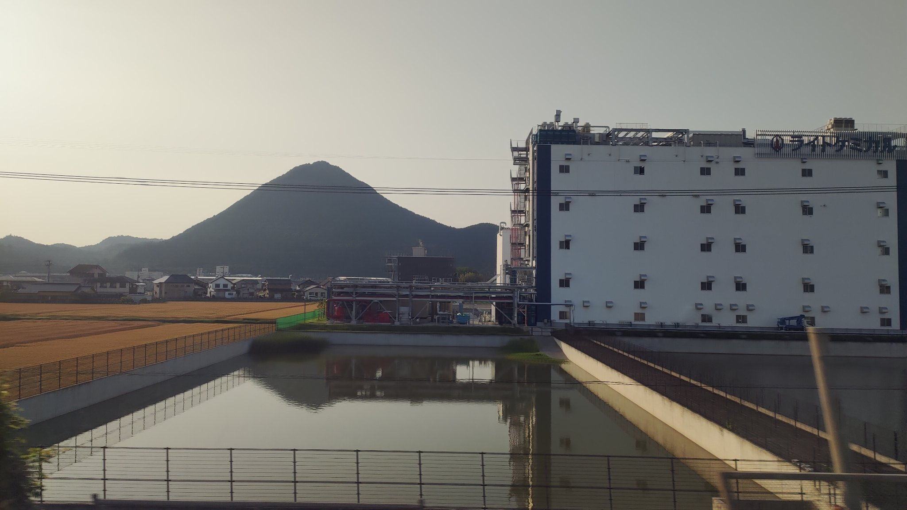
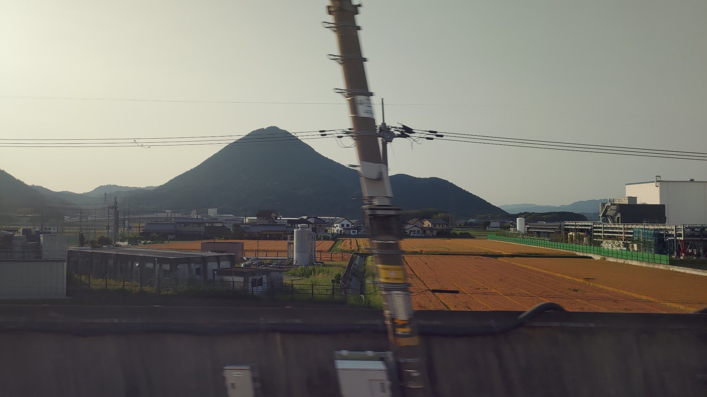
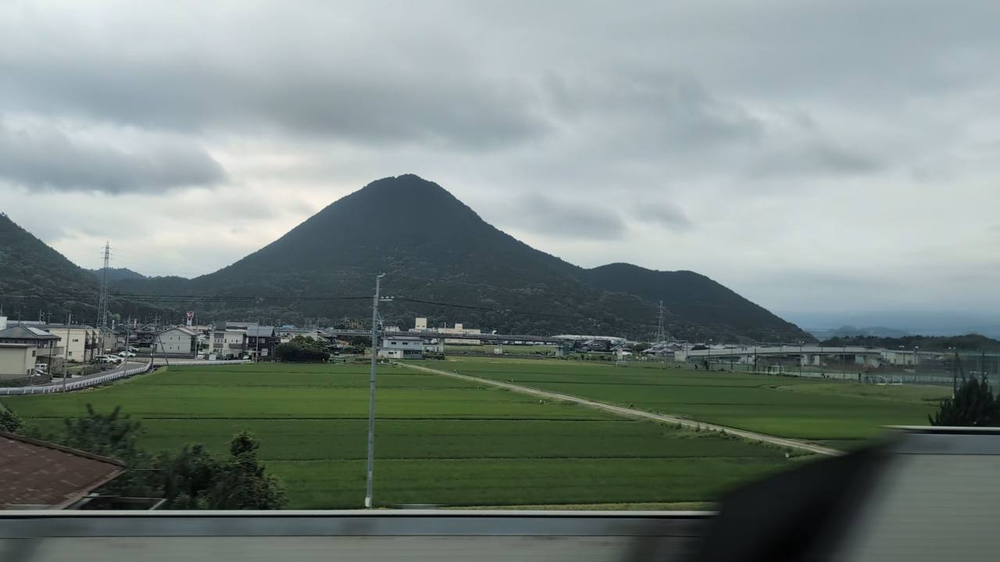

TOKAIDO SHINKANSEN WINDOW VIEW
近江富士は新幹線から見える？
琵琶湖の手前、もうひとつの富士。

- 見える区間
- 米原 → 京都
- 座席側
- A席側
- タイミング
- 東京発のぞみ基準で約123分後
- 写真
- 3 枚
近江富士の見つけ方
米原を出てしばらくすると、A席側に三角の美しい山が見えてきます。三上山、別名・近江富士。水田に映れば、車窓だけの逆さ富士です。少し余裕を持って探してみてください。
東京から新大阪方面へ向かう場合は、米原 → 京都が近づいたらA席側の窓を少し早めに見てください。新大阪から東京方面へ向かう場合は、通過順が逆になります。
東海道新幹線の車窓としてのポイント
近江富士は、富士山だけではない東海道新幹線の車窓を楽しむための見どころです。列車の速度が速いため、見える時間は短く、天気や座席位置によって見え方が変わります。
写真で見る近江富士

